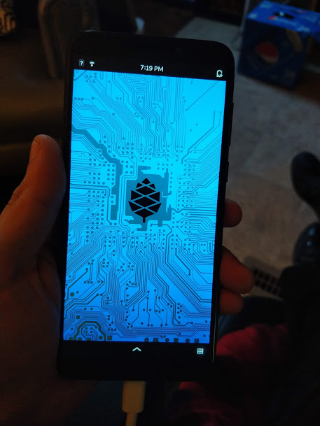

your number one source for linux phone news
~ ~ ~ News | Operating Systems | Software | Devices | Contact Us | About Us ~ ~ ~
The Debian-based PureOS is the Linux distribution that is developed and actively maintained by Purism, and is the prominent distro of choice for all of their products, powering the Librem line of Purism laptops, as well as, of course, Purism's own Librem 5 Linux phone.
In order to make PureOS scale down to something comfortably usable on a handheld device, Purism developed the Phosh shell, which is now used not only in PureOS, but in several other Linux phone operating systems as well, such as Mobian, PostmarketOS, Arch Linux ARM, and more. It exists alongside KDE's Plasma Mobile as the mobile UI of choice for most mobile distributions.
Of course, Linux being Linux, PureOS was never only going to run on the Librem 5. Thanks to the work of mozzwald, who originally ported PureOS to the PinePhone, and clover, who currently maintains it, PinePhone owners can enjoy PureOS on their device as well.
If you are a Librem 5 backer, PureOS will come preinstalled on your device when it arrives at your doorstep, as it is the default operating system written specifically for the device.
If you're a PinePhone user, you can download a copy of the above mentioned PureOS PinePhone port, extract the image onto your local machine, flash it onto an SD card, and slide it into your device. Set up a few things on boot, and you will be ready to start using it.
PureOS PinePhone port: